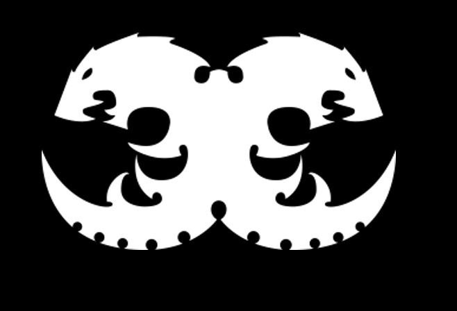

Welcome to the Grimdark Future
The Warhammer 40k universe is set in the 41st millennium, where humanity teeters on the brink of annihilation. In this grimdark future, there is only war. Mankind fights against alien invaders, traitors, and the malevolent forces of Chaos in a galaxy consumed by conflict. Explore the epic stories, tragic events, and key characters that shape this universe below.
The Imperium of man
The Imperium of Man is a vast, authoritarian regime that spans the galaxy. It is ruled by the Emperor of Mankind, a god-like figure who has been entombed on the Golden Throne for over 10,000 years. Despite his immobility, his influence permeates every aspect of Imperial life.
The Imperium is constantly at war, defending humanity from xenos (aliens), heretics, and the forces of Chaos. The Astra Militarum (Imperial Guard), the Space Marines, and the Adeptus Mechanicus are some of the key military forces that protect the Imperium.
Important events include:
- The Horus Heresy: A civil war that nearly tore the Imperium apart, led by Horus, the Emperor’s most beloved son.
- The Great Crusade: The Emperor’s campaign to unify humanity and reclaim the galaxy from the darkness.
- The Age of Apostasy: A period of civil unrest and corruption within the Imperium, almost leading to its downfall.
The Forces of Chaos
Chaos is the great enemy of the Imperium. It is an ever-present threat from the Immaterium (the Warp), a dimension of pure psychic energy. The Chaos Gods—Khorne, Nurgle, Tzeentch, and Slaanesh—each seek to corrupt and destroy the mortal realm.
The Chaos Space Marines, once loyal servants of the Emperor, turned against humanity during the Horus Heresy and now serve the dark gods. Their hatred for the Imperium drives them to spread death and destruction across the galaxy.
- Khorne: The Blood God, who thrives on violence and slaughter.
- Nurgle: The Plague God, who represents decay, disease, and endurance.
- Tzeentch: The Changer of Ways, the god of magic, intrigue, and change.
- Slaanesh: The Prince of Excess, who feeds on indulgence and desire.
The Xeno Threat
The galaxy is home to countless alien species, many of which pose a dire threat to humanity. While the Imperium views all xenos as enemies to be purged, these races have their own motivations and goals in the endless conflict:
- Elder: An ancient and advanced race, the Eldar seek to preserve their dwindling numbers while trying to manipulate the galaxy's fate.
- Orks: A brutal, war-loving race that thrives on battle and chaos. They are a constant thorn in the side of the Imperium and Chaos alike.
- Tyranids: A ravenous swarm of bio-engineered organisms, the Tyranids consume all life in their path, leaving only desolation in their wake.
- Necrons: Once a powerful humanoid race, the Necrons have awoken from millennia-long slumbers in their cold tombs, seeking to reclaim the galaxy they once ruled.
Timeline of Key Events
- M30: The Emperor begins the Great Crusade, uniting the galaxy under the banner of the Imperium.
- M31: The Horus Heresy erupts as Horus, the Emperor’s favored son, betrays him. The galaxy is torn apart by civil war.
- M32: The Age of Rebirth begins as the Imperium struggles to rebuild following the Heresy.
- M41 The Imperium is besieged by countless enemies. The Tyranids invade, the Necrons awaken, and Chaos launches the 13th Black Crusade.
- M42: Roboute Guilliman is resurrected, leading the Indomitus Crusade to defend humanity from the brink of annihilation.